作答记录
进度提前
实际消耗工时（或成本）低于预算值，即项目有结余或效率高
可以变化，但是必须通过基线变更控制流程处理
所有的项目必须定义基线
在一个项目会议上，一个成员提出增加任务的要求，而这个要求超出了WBS 确定的项目基线，这时项目经理提出团队集中
精力完成而且仅需完成原来定义的范围基线，这是一个（ ）的例子。
常规管理技能、项目管理信息系统
组织程序
工作授权系统、状态评审会议
一个正式的、经过批准的文件，用来指导项目的执行和控制
由高层管理下达的一份授权项目经理在项目活动中使用组织资源的文件
一份描述公司组织分解结构的文件
要提供的产品或服务的叙述性描述
变更范围基准计划
准备一份偏差报告
召集变更控制委员会的开会
依照最初的基准计划完成项目后，为另一个改进的项目筹得了资金，再进行调整
对执行组织战略计划的审查
包含在WBS 最底层的计划工作，也称为WBS 词典
当产品的特征是渐进明细时，可以改变项目范围，项目经理必须做好这类范围变更计划
因为每个项目产品都是独特的，产品或服务的不同特征一定是渐进明细的
随着项目团队对项目的开发越完善和越清晰，需求就越清晰
渐进明细是项目的二个特征，它综合了临时性和独特性的概念
阻止变更
标识变更，提出变更，管理变更
管理SCCB
客户的想法
确定进度偏差是否需要采取纠正措施
定义项目的可交付成果所需要的活动
评估WBS 定义是否足以支持进度计划
确保项目队伍的士气高昂，发挥团队成员的潜力
根据项目基准，确定项目需要多少资源
基于过去的成效，调整进度和成本基准
展现偏差原因和选择某种纠正措施的理由
显示为何组织选择某些项目而不选择另外一些项目
显示为何不同人被选择为项目经理和团队成员
假设你有一个项目包括以下五项任务：任务1 立刻开始，估计工期为1 天；任务2 在任务1 完成后开始，估计工期为4 天；
任务3 在任务2 完成后开始，估计工期为5 天；任务4 在任务1 完成后开始，估计工期为8 天；任务5 在任务3 和4 完成后开始，
估计工期1 天；在PDM 中，任务5 与任务4 的关系是（ ）。
快速跟进项目，以保证不会延误项目进度
检查绩效报告，以确定哪些计划日期尚未达到，以及对关键路径的影响
尽快从其他地方获得额外的供应
通过制定对已知的项目干系人的反应表来关注对项目的批评
积极减少可能会严重影响项目的项目干系人活动
风险管理有助于使有利于项目目标的积极事件发生的可能性和产生的结果最大化；使不利于项目目标的消极事件发生的可能性
和产生的结果最小化。在这个说法下，风险应对规划有助于（ ）。
制订程序和步骤来提高实现项目的机会和减少对项目目标的威胁
确定哪些风险可能对项目产生影响，同时记录它们的特征
监测剩余风险，识别新风险和执行风险缓解计划
项目计划开发、项目计划实行和范围变更控制
常规管理、产品知识和项目管理信息系统
项目计划开发、启动和综合变更控制
项目集成管理、项目范围管理、项目进度管理、项目成本管理、项目质量管理、项目人力资源管理、项目沟通管理、项目风险管理、项目采购管理、项目干系人管理
生理需求、安全需求、社会归属需求、自尊需求、自我实现需求
书面沟通、口头沟通、语言沟通、非语言沟通、正式沟通、非正式沟通、单向沟通、 双向沟通、网络沟通。以上沟通方式写出 5 种即可。
软件项目风险是指对软件开发过程及软件产品本身可能造成的伤害或损失。
风险识别、风险评估、风险规划、风险控制
（1）马斯洛需求层次理论（2）海兹波格激励理论 （3）麦格雷戈 X 理论 （4）麦格雷戈 Y 理论 （5）超 Y 理论 （6）Z 理论 （7）期望理论. 以上理论写出 5 种即可。
软件需求规格-》功能需求、非功能性需求、系统需求、质量属性、约束和假设 功能需求-》用户需求-》业务需求
配置项的标识、跟踪； 配置管理环境建立； 配置管理基线变更； 配置审计； 配置状态统计； 配置管理计划
（1）代码行估算方法，（2）功能点估算方法，（3）用力点估算方法 （4）类比估算方法，（5）自下而上估算方法，（6）三点估算方法 （7）参数模型估算方法，（8）参数模型估算方法 （9）专家估算方法 （10）猜测估算方法
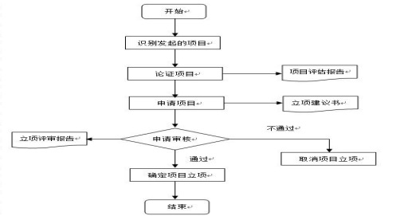
（1）评估变更 （2）批准变更申请 （3）在生命周期内规范变更申请流程 （4）对变更进行反馈 （5）与项目管理层沟通

配置管理是一套管理软件开发和维护及其各种中间软件产品的过程和方法。是记 录软件产品的演化过程，得到精确的产品配置，最终保证软件产品的完整性、一致性、 追朔性、可控性的过程和方法。
配置管理基线是一个或多个配置项的集合，它们的内容和状态已经通过技术的复审， 并在生存期的某一阶段被接受了。
质量保证（ QA）是通过评价项目整体绩效 ,建立对质量要求的信任，提供项目和 产品可视化的管理报告。 这个任务本身并不能提高产品的质量， 但是通过质量保证的 一系列工作可以间接地提高产品的质量。质量保证一般由质量保证部门人员实施。
质量控制（ QC）是确定项目结果与质量标准是否相符 ,同时 ,确定消除不符的原因 和方法，它控制产品的质量，及时纠正缺陷。这个任务本身提高产品的质量，一般由开 发人员实施。（2 分） 质量保证是后期质量活动，质量控制是前期质量活动。
（1）软件开发的人员、时间、资源、技术等不足（每一项也可以单独算一个）
（2）软件开发环境越来越复杂
（3）软件规模越来越大
（4）软件的质量要求越来越高
（5）软件维护越来越困难
软件项目风险是指对软件开发过程及软件产品本身可能造成的伤害或损失。
回避风险、转移风险、损失控制、自留风险
瀑布模型、V 模型、快速原型模型、增量式模型、渐进式模型、敏捷模型/Scrum
试验设计、基准对照、质量成本分析、流程图、因果分析
项目集成管理、项目范围管理、项目时间管理、项目成本管理、项目质量管理、项 目人力资源管理、项目沟通管理、项目风险管理、项目采购管理、项目干系人管理
代码行估算法、功能点估算法、用例点估算法、类比估算法、自下而上估算法、参 数模型估算法、专家估算法.以上估算法写出 5 种即可。
书面沟通、口头沟通、语言沟通、非语言沟通、正式沟通、非正式沟通、单向沟通、双向沟通、网络沟通。以上沟通方式写出 5 种即可。
1、可移植性；
2、可使用性-》可靠性、效率、人类工程；
3、可维护性-》可测试性、可理解性、可修改性；
1、缺乏计划 ---项目开始前要求制定相应的各项计划
2、 关键人物流失 ---加强团队建设，制定人员备份和挽留方案
3、资金不到位 ---按预算制定资金使用计划，提前预约资金
4、质量不达标 ---建立质量保证计划和方案，强制在整个项目过程中执行
5、技术无法实现 ---采用外包或购买
等等
（1）确认并分解项目的主要组成要素 （2）确定分解标准，按照项目实施管理的方法分解，分解标准要统一 （3）确认分解是否详细，是否可以作为费用和时间估计的标准，明确责任 （4）确定项目交付成果 （5）验证分解正确性
（1）识别项目干系人 （2）按重要性对干系人进行分析 （3）按支持度对干系人进行分析 （4）制定项目干系人分析坐标格 （5）编制项目干系人计划的内容
（1）建立标准 （2）采集项目实际数据 （3）实际结果与计划比较 （4）决定是否 修正计划 （5）修正计划，协调各方
（1）需求定义 （2）商务条件确定 （3）验收标准确定 （4）资料汇集 （5）采购需求认可 （6）编写招标文件
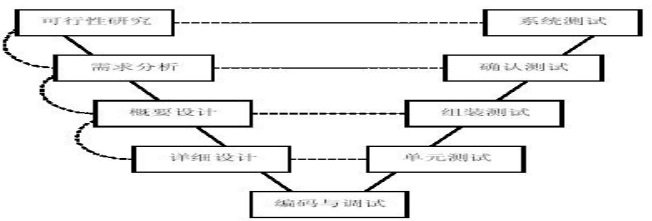
（1）定额估算法 （2）经验导出模型 （3）CPM(关键路径法估计) （4）PERT(工程评估评审技术) （5）基于承诺的进度估计 （6）Jones 的一阶估算准则
质量成本是由于产品的第一次工作不正常而衍生的附加花费。
包括两部分（1）预防成本 （2）缺陷成本
（1）类比法 （2）模版参照 （3）自上而下 （4）自下而上
（1）网络图 （2）甘特图（3）里程碑图 （4）资源图 （5）关键路径图
（1）需求获取（2）需求分析
（3）编制需求规格说明书（4）需求验证
（5）需求变更管理
内部逻辑文件、外部输出文件、外部输入文件、外部查询文件、外部接口文件
项目的初始、计划、执行、控制和结束
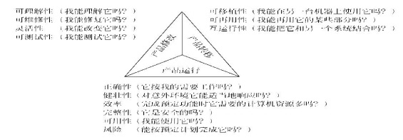
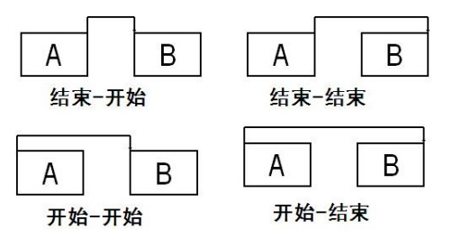
（1）德尔菲方法 （2）头脑风暴法 （3）情景分析法 （4）利用风险条目检查表 （5）问询法
（1）需求获取 （2）需求分析 （3）编制需求规格说明书 （4）需求验证 （5）需求变更管理
（1）制定招标文件 （2）竞标 （3）收集供方的投标书 （4）评定供方 （5）最终供方确定 （6）供方名单
自下而上的成本估算法就是利用WBS,对各个具体工作包进行详细的成本估算,然后
将结果累加起来得出项目总成本。
其特点包括：（1）相对比较准确，它的准确度来源于每个任务的估算情况（2）花
费时间
四大要素：范围(S)、质量(Q)、进度(T)、成本(C)
四大要素关系：（1）C 与S 成一定正比关系
（2）C 与Q 成一定的正比关系
（3）C 与T 成一定的反比关系
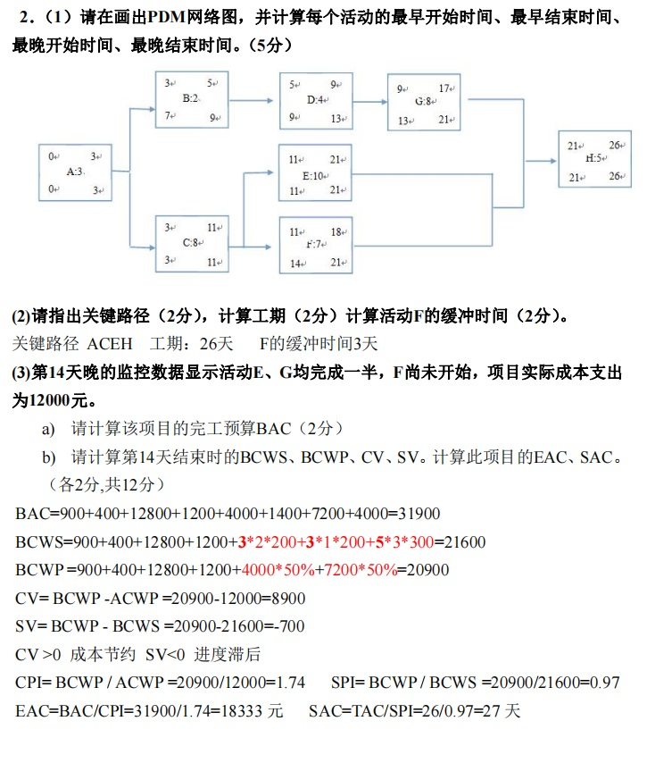
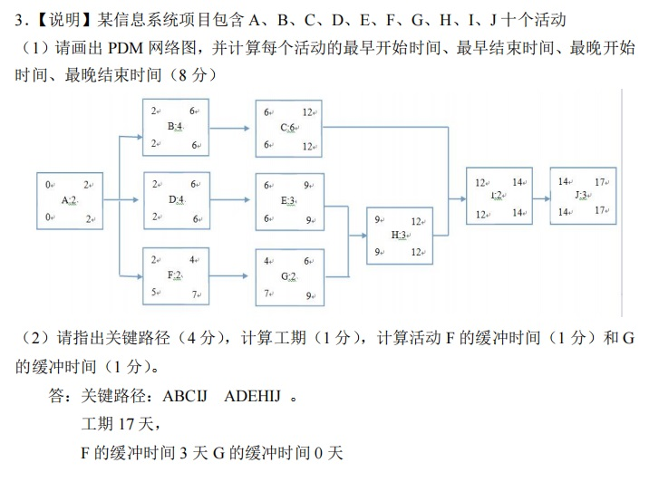
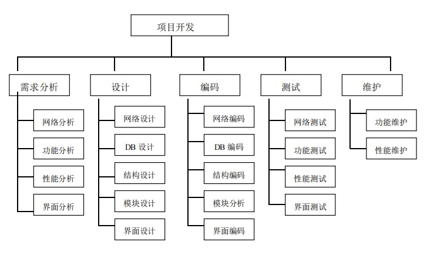
- 需求分析师 (2 人) - 系统架构师（1 人） - 开发工程师 （10 人） - 测试工程师 （2 人） - 风险管理师 （1 人） - 配置工程师（1 人） - 产品顾问 （１人） 等等
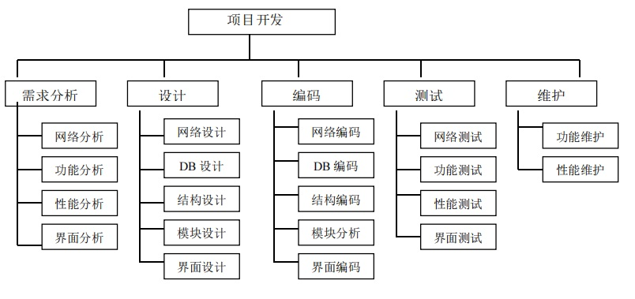
- 缺乏计划---项目开始前要求制定相应的各项计划
- 关键人物流失---加强团队建设，制定人员备份和挽留方案
- 资金不到位---按预算制定资金使用计划，提前预约资金
- 质量不达标---建立质量保证计划和方案，强制在整个项目过程中执行
- 技术无法实现---采用外包或购买
某软件的设计需要包括结构设计、网络设计、数据库设计、模块设计、界面设计等，每一项工作都需要包括功能设计、性能设计、容错设计、设计确认等环节。请画出整个设计的开发过程的工作分解结构图。
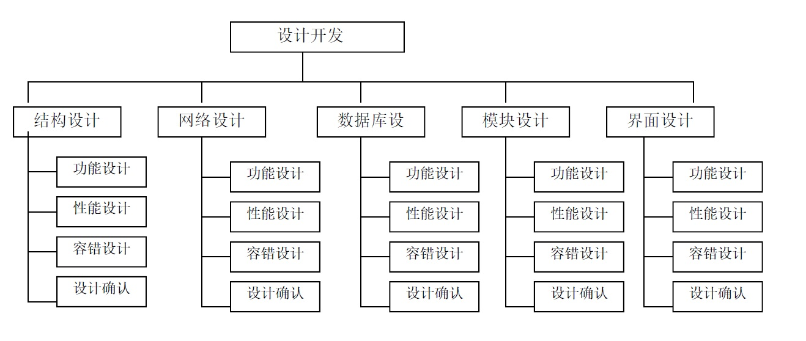
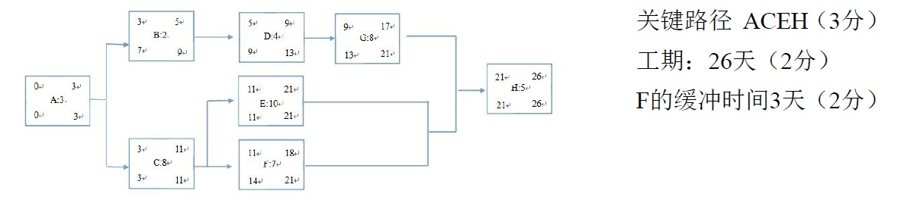
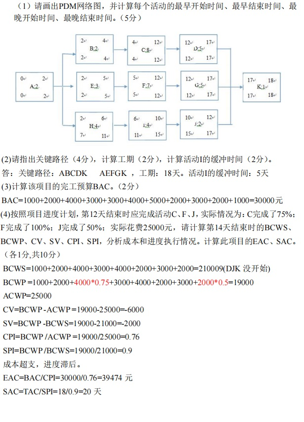
- 质量保证部门的人员构成 - 质量保证部分的任务和权利 - 质量保证部门的预算 - 各项工作的质量保证计划的制定 - 各项工作的质量保证计划的实施 - 各项工作的质量保证计划的度量 - 质量保证部门的关系单位和其他部门之间的关系
- 缺乏计划 ---项目开始前要求制定相应的各项计划 - 关键人物流失 ---加强团队建设，制定人员备份和挽留方案 - 资金不到位 ---按预算制定资金使用计划，提前预约资金 - 质量不达标 ---建立质量保证计划和方案，强制在整个项目过程中执行 - 技术无法实现 ---采用外包或购买
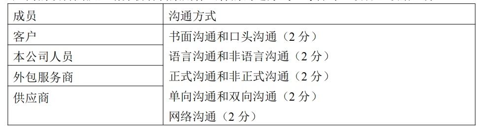
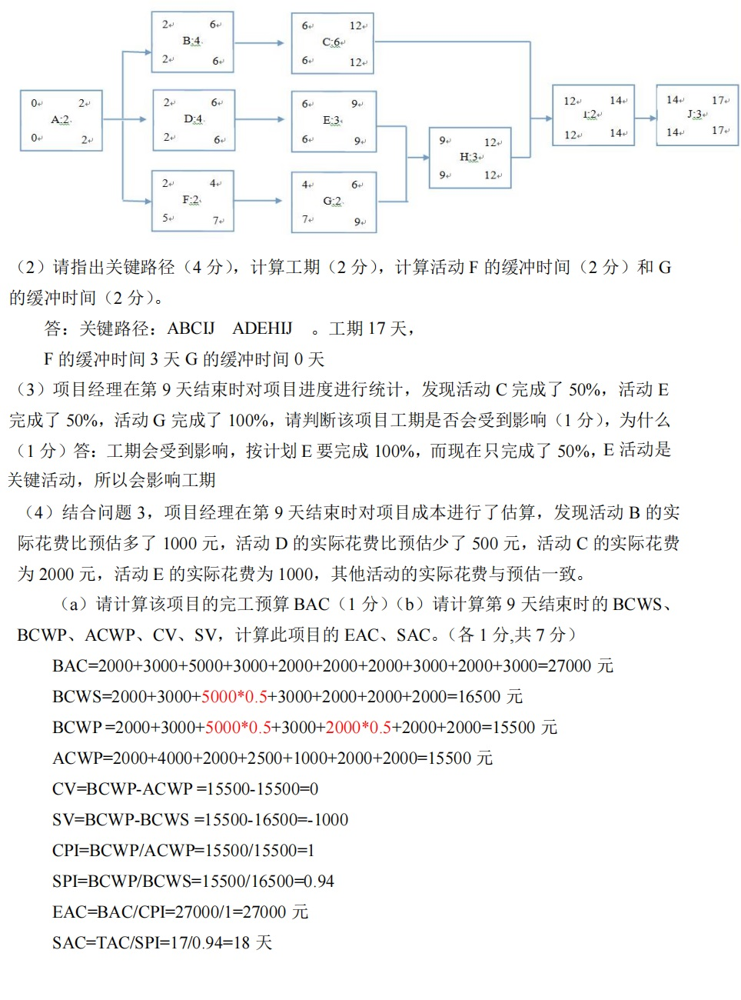
- 质量保证部门的人员构成 - 质量保证部分的任务和权利 - 质量保证部门的预算 - 各项工作的质量保证计划的制定 - 各项工作的质量保证计划的实施 - 各项工作的质量保证计划的度量 - 质量保证部门的关系单位和其他部门之间的关系
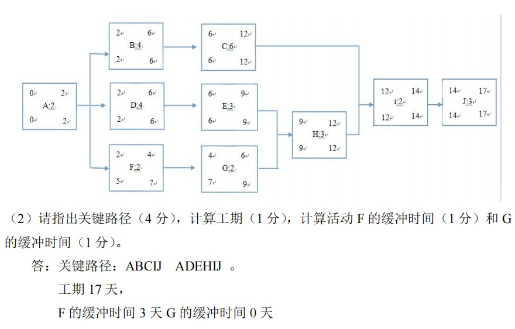
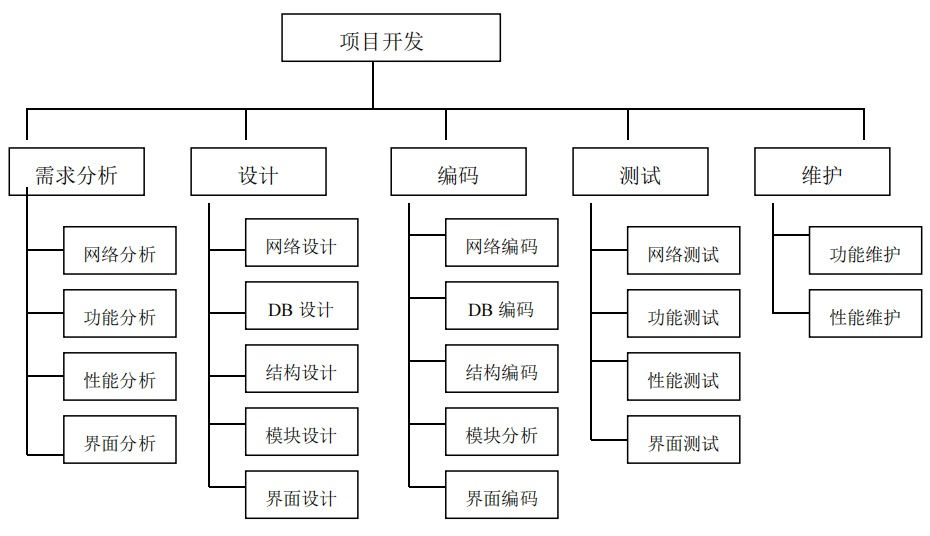
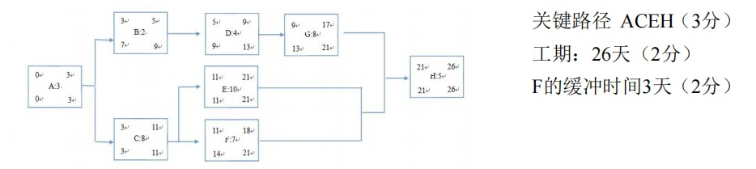
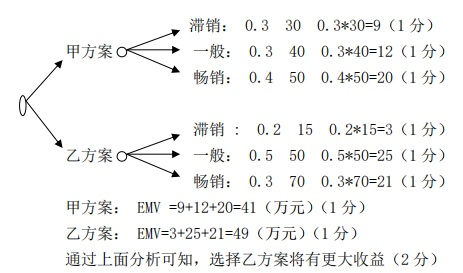
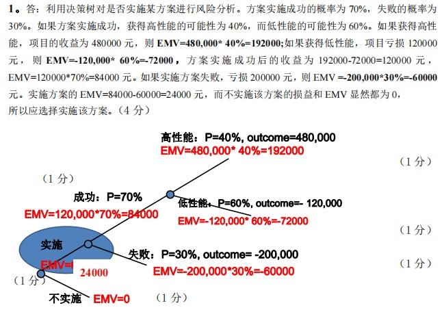
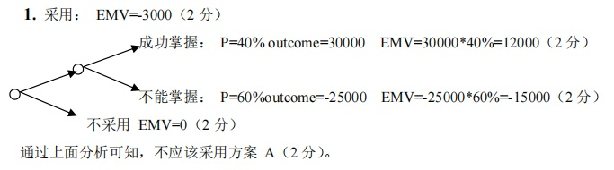
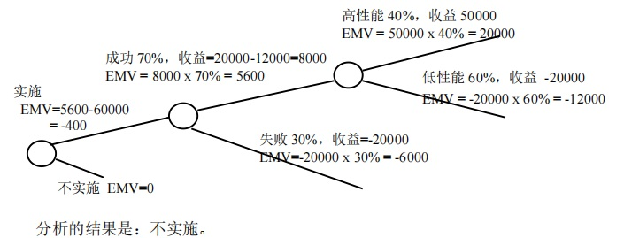
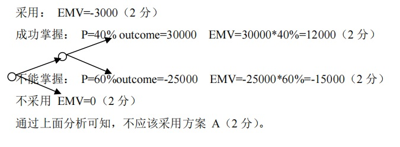
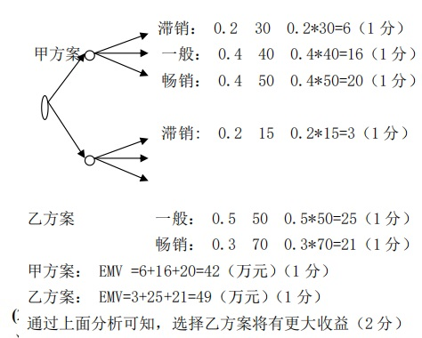
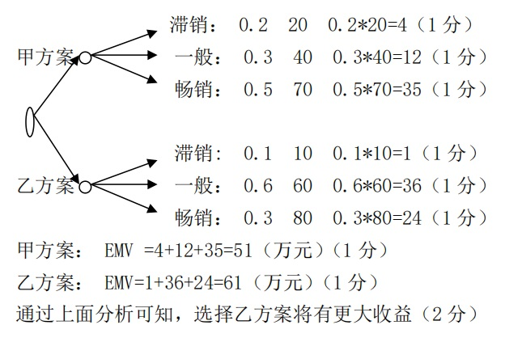
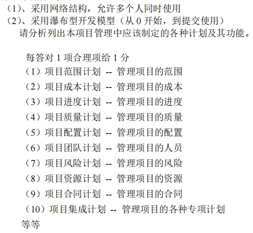
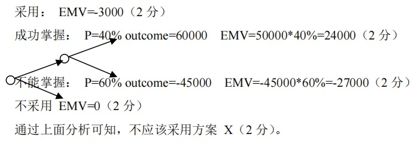